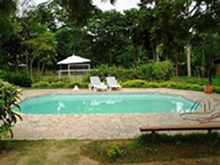
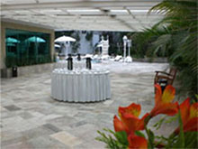

Seja bem vindo ao Buffet Ana Maria |
|  |
Desde 1990, o Buffet Ana Maria realiza eventos personalizados, com alto padrão de qualidade e foco no sonhos e objetivo do cliente
Os valores intitucionais de cortesia, ética, parceria e profissionalismo são notados em cada detalhes do atendimento e a atenção com a sustentabilidade e a ecologia também fazem parte da filosofia do Buffet.
O Buffet Ana Maria possui um espaço de eventos com o melhor acesso de votorantim e 2.000 m² de área verde, onde a natureza compõe um chamado jardim proporciona um ambiente de requinte e elegâcia ao ar livre.
Festeje os melhores momentos da vida com qualidade, venha para o Buffet Ana Maria e conheça nossas instalações.
| Requinte e Elegância |
|  |
A Ala Morumbi é o cartão de vsita do Buffet Ana maria já que é o salão que integra o jardim e sua charmosa
área coberta.. Este espaça é muito utilizado para recepções com louge ou para cerimônias civil ou religiósa. A Ala Morumbi atende eventos com minimo de 150 convidados até 320 convidados na parte interna (compista de dança), 80 pessoas nos terraços e mais 200 pessoas na área externa . Portanto a capacidade da Ala Morumbi + Jardim é de 600 pessoas sentadas ou mais de 800 pessoas em eventos em pé como finger food ou coquetel.
O jardim é um espaço contemplativo, com paisagismo, multiuso, perfeito para cenário de fotos, coqueteis a céu aberto, lounges descontraidos, cerimônias religiosos e cilvil e faz parte da Ala Morumbi.
Já imaginou reealizar sua festa com coquetel de recepção a céu aberto ou quem sabe mesas de jantar para até 200 pessoas sentadas na área coberta pela tenda?
Sua festa ao ar livre. Comemore!